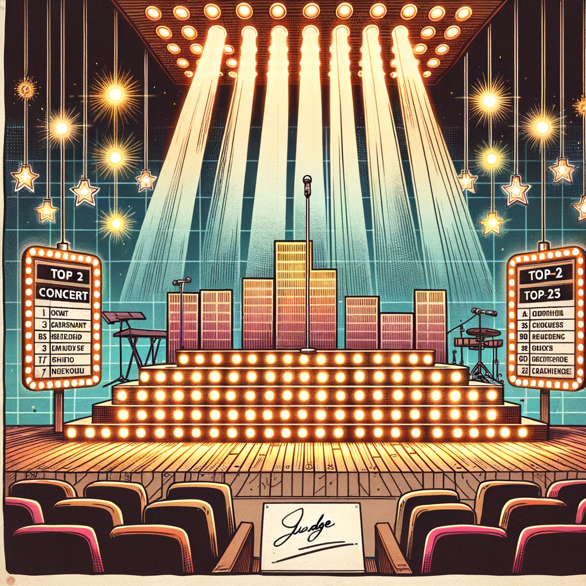

RetroVerse • 1978
Page 30
RetroVerse Top 23
Year-End Song Ranking

Year: 1978
This ranking is derived from the RetroVerse 1978 context dataset (Billboard Hot 100-based yearly performance scoring).
| Rank | Song Title | Artist | Weeks | Peak | Score |
|---|---|---|---|---|---|
| 1 | Stayin' Alive | Bee Gees | 23 | 1 | 503 |
| 2 | Night Fever | Bee Gees | 20 | 1 | 490 |
| 3 | (Love Is) Thicker Than Water | Andy Gibb | 20 | 1 | 466 |
| 4 | Three Times A Lady | Commodores | 20 | 1 | 420 |
| 5 | Kiss You All Over | Exile | 23 | 1 | 417 |
| 6 | Can't Smile Without You | Barry Manilow | 19 | 3 | 382 |
| 7 | MacArthur Park | Donna Summer | 17 | 1 | 369 |
| 8 | Lay Down Sally | Eric Clapton | 23 | 3 | 366 |
| 9 | Shadow Dancing | Andy Gibb | 25 | 1 | 360 |
| 10 | Boogie Oogie Oogie | A Taste Of Honey | 23 | 1 | 352 |
| 11 | Emotion | Samantha Sang | 20 | 3 | 345 |
| 12 | Hot Blooded | Foreigner | 17 | 3 | 327 |
| 13 | Take A Chance On Me | Abba | 18 | 3 | 325 |
| 14 | Miss You | The Rolling Stones | 20 | 1 | 321 |
| 15 | You're The One That I Want | John Travolta | 24 | 1 | 318 |
| 16 | How Deep Is Your Love | Bee Gees | 18 | 1 | 298 |
| 17 | You Don't Bring Me Flowers | Barbra Streisand | 10 | 1 | 295 |
| 18 | Sometimes When We Touch | Dan Hill | 16 | 3 | 286 |
| 19 | How Much I Feel | Ambrosia | 18 | 3 | 280 |
| 20 | Grease | Frankie Valli | 22 | 1 | 279 |
| 21 | Double Vision | Foreigner | 15 | 2 | 279 |
| 22 | Hopelessly Devoted To You | Olivia Newton-john | 19 | 3 | 277 |
| 23 | Baker Street | Gerry Rafferty | 20 | 2 | 275 |
RetroVerse editorial adjustments may be applied to final published ordering when needed for issue flow, while keeping dataset-derived performance as the base model.